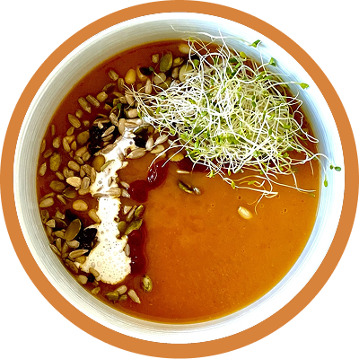

Reseptit
Bataattikeitto

Nimi: Bataattikeitto
Keittoaika: 40-45 min.
Aineosat:
- 1 rkl (15 ml) oliiviöljyä
- 1 keskikokoinen sipuli kuutioituna
- 1 keskikokoinen purjo, kuituiset lehdet poistettu, hienonnettu
- 2 valkosipulinkynttä, viipaloitu
- 2½ kasvisliemikuutiota
- 5 kupillista (1200 ml) vettä
- 1 kesäkurpitsa, hienonnettuna
- 1 porkkana, hienonnettuna
- 1 keskikokoinen peruna, leikattu 1 cm:n kuutioiksi
- 1 iso bataatti, leikattu 1 cm:n kuutioiksi
- mausteet
Resepti:
- Kuumenna öljy isossa kattilassa korkealla lämmöllä. Kun se on kuuma, lisää sipuli, purjo ja valkosipuli. Keitä 5 minuuttia.
- Lisää loput ainekset. Keitä hiljaisella lämmöllä osittain kannen alla 15 minuuttia tai kunnes perunat ovat kypsiä.
- Sekoita osa keitosta sauvasekoittimella, mutta jätä muutama paloina jäämään. Vaihtoehtoisesti voit käyttää seisova tehosekoitinta, jolloin on suositeltavaa sekoittaa noin puolet keitosta.
Menemen
Nimi: Menemen
Keittoaika: 30 min.
Aineosat:
- 250 g. tofu
- rkl. soijakastike
- 40 g. paprika
- 4 rkl. tomaattipyre
- mausteet
- 2 rkl. kasviöljy
- 10 g. sipuli
- 2 rkl. soijajogurtti
- 1 rkl. sokeria
Resepti:
- Hienonna sipuli ja kuumenna paistinpannu pienellä kasviöljyllä keskilämmöllä.
- Paista sipulia mausteilla, kunnes sipuli muuttuu läpikuultavaksi.
- Leikkaa paprika ohuiksi viipaleiksi ja lisää sipuliin.
- Murenna tofu pannulle ja paista 5 minuuttia.
- Lisää pannulle jogurtti, tomaattipasta ja soijakastike.
- Keitä kannen alla 10 minuuttia.
Banana bread muffinsit
Keittoaika: 30 min.
Aineosat:
- 3 banaania
- 70 ml. maitoa
- 50 ml. kasviöljy
- 150 g. sokeria
- 400 g. jauhoja
- 2 tl leivinjauhe
Resepti:
- Muussaa banaanit haarukalla tasaiseksi;
- Lisää niihin maito, kasviöljy ja sokeri ja sekoita;
- Lisää seokseen jauhot ja leivinjauhe;
- Sekoita tasaiseksi;
- Kaada muffinivuokiin;
- Kypsennä uunissa 13 minuuttia 180 ℃;
- Tarkista valmius hammastikulla ja anna jäähtyä ennen käyttöä.